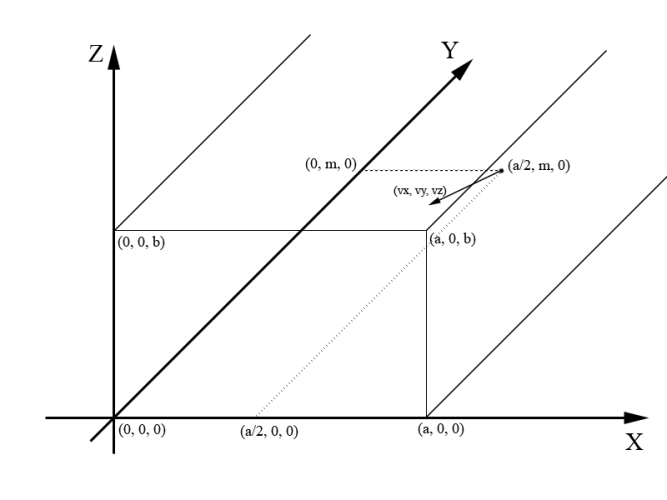

CodeForces Round 128 DIV2
這次玩脫了。好不容易四題都做出來，卻因爲小細節掛了兩題。
Description
Two Problems
題意就是說，CF有兩題，每題初始分A和B，然後每題在每分鐘會扣DA和DB分。給你比賽總時間T，問你某個人可不可能拿到X分。（注意可能做出一題、兩題或者一題也沒做出）
(0 ≤ x ≤ 600; 1 ≤ t, a, b, da, db ≤ 300且保證及時比賽時間到了各題的分數也不會小於0)
Game on Paper
有一個 NN 方格紙。在上面的方格里一格格塗黑。每一步塗一格一共塗 m 次，給定 xi 和 yi。問最少塗幾步方格紙裏會出現一個 33 的正方形。
(1 ≤ n ≤ 1000, 1 ≤ m ≤ min(n· n, 105))
Photographer
照相內存卡里有d容量。其中高質量照片佔a容量、低質量佔b容量。然後有n個顧客，每個顧客需要xi張高質量照片和yi張低質量照片。攝影師如果給一個人拍照了，就應該滿足他所有要求（即給xi張高質量照片和yi張低質量照片）。問攝影師最多能給幾個人拍照。
(1 ≤ n ≤ 105, 1 ≤ d ≤ 109, 1 ≤ a ≤ b ≤ 104, 0 ≤ xi, yi ≤ 105)
Hit Ball
封閉房間裏，從房間的一頭最底下的中間以某個方向踢球（一定是網對面踢），問踢到另一頭的牆上的時候，x、z各是多少。
(各座標以及向量都是小於等於100的正整數)

Transportation
還沒看。
Analysis
Two Problems
這題只要注意幾個trick就行了：可以做出0題、1題或者2題。直接兩個for枚舉各題在幾分鐘內做出來，然後做一下0題、1題的特殊判斷就好了。
Game on Paper
在每次塗的時候，以當前塗的點位中心，設它爲九宮格的其中一個位置（一共九種位置），對於每種位置，都判斷其對應的九宮格是不是 3*3 的黑色就好了。(我做的時候在設位置的時候 x - 1, y - 1 手賤敲成了 x - 1, y - 2，lock 之後才發現。悲劇)
Photographer
貪心。對於每個人將其所需的總容量算出來再進行遞增排序。最後求的時候推薦累減的方式判斷，因爲我累加然後用 int 最後爆範圍了。
Hit Ball
首先拿出空間幾何的線面相交模板。然後來一個 while，每次循環的時候判斷當前所在的點與方向適量形成的直線與 (X, 0, Z) 面的交點在不在終點牆壁大小的範圍內。若不是則說明中途撞牆了判斷方向向量：x < 0則線面相交判斷是不是撞左牆，若是則 x 正負值變一下；x > 0 則線面相交判斷是不是撞右牆，若是則 x 正負值變一下。z < 0則判斷是不是以求搶地，若是則 z 正負變一下。最後 z > 0 則判斷是不是撞天花板，若是則z正負值變一下。然後以球撞擊的點爲新的起點，與新的方向向量形成新的直線，繼續下一次循環。因爲房間大小最大是 100 100 100，而方向向量各方向是 1 到 100 的整數，不是小數，則撞擊次數不會很多，直接 while 撞擊也不會超。
Code
Two Problems
1 | #include <iostream> |
Game on Paper
1 | #include <iostream> |
Photographer
1 | #include <iostream> |
Hit Ball
1 | #include <iostream> |